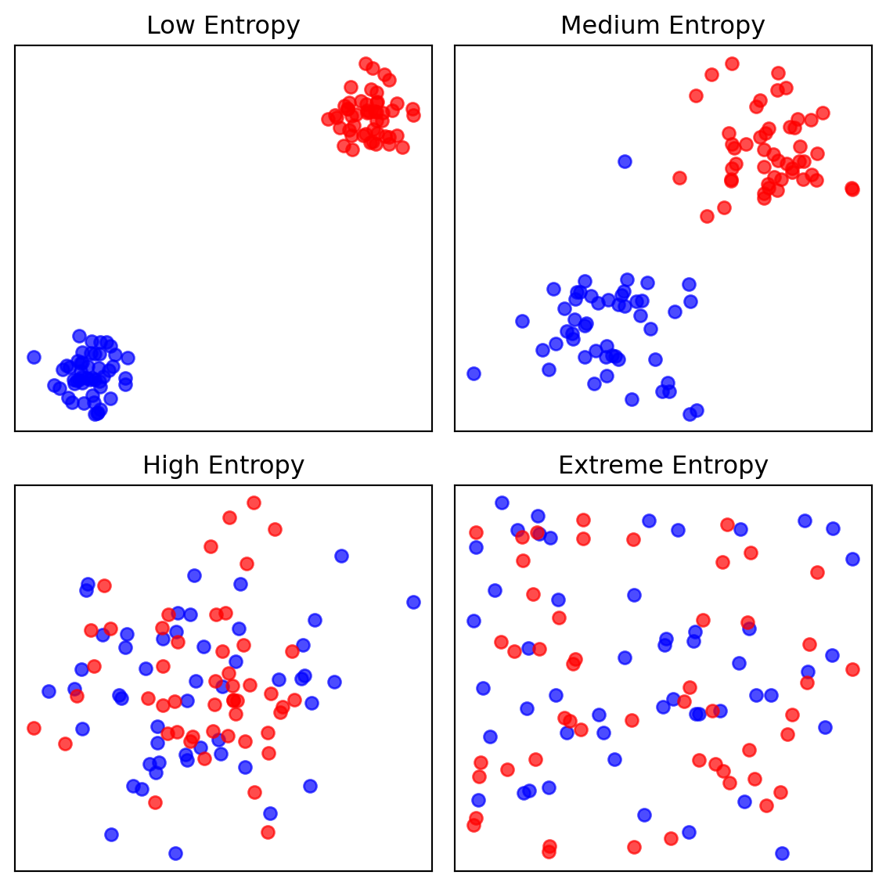
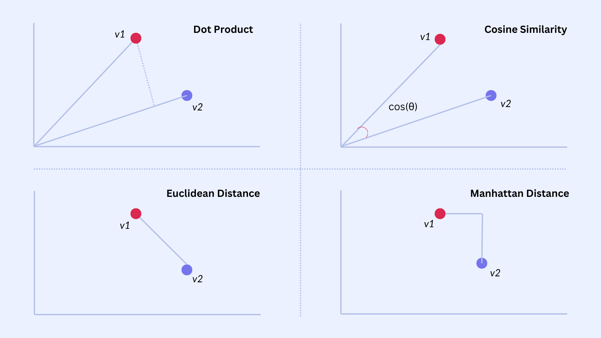
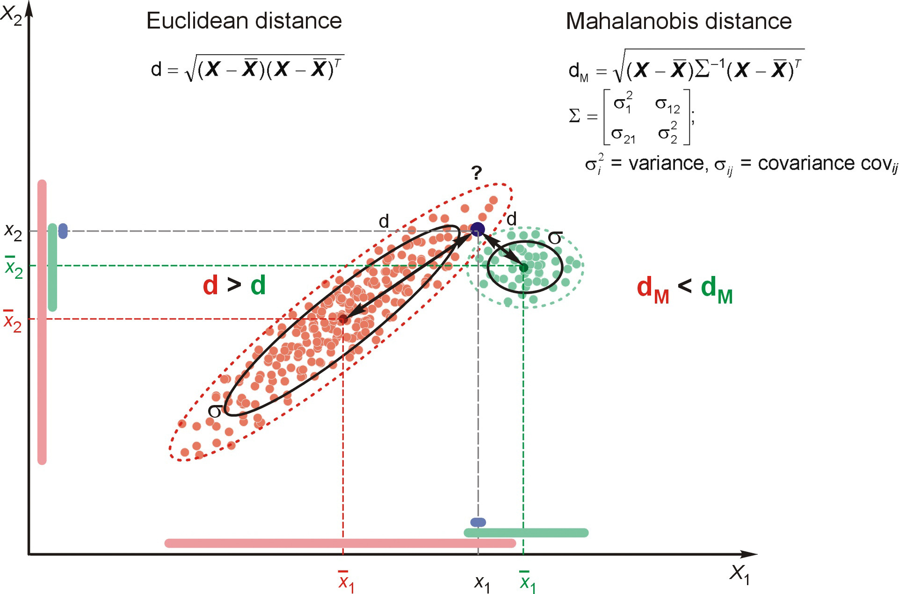
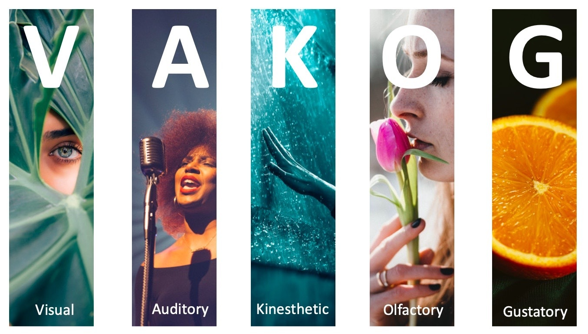
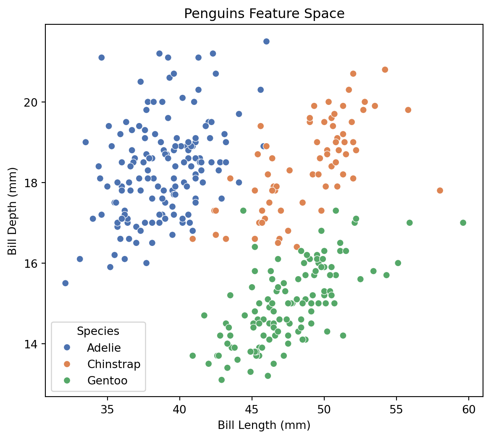
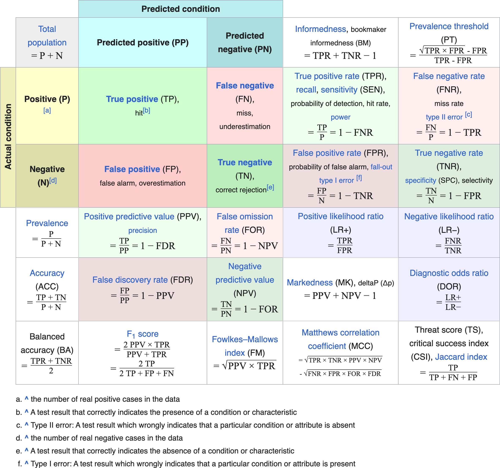
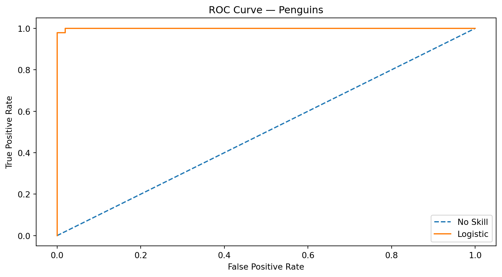
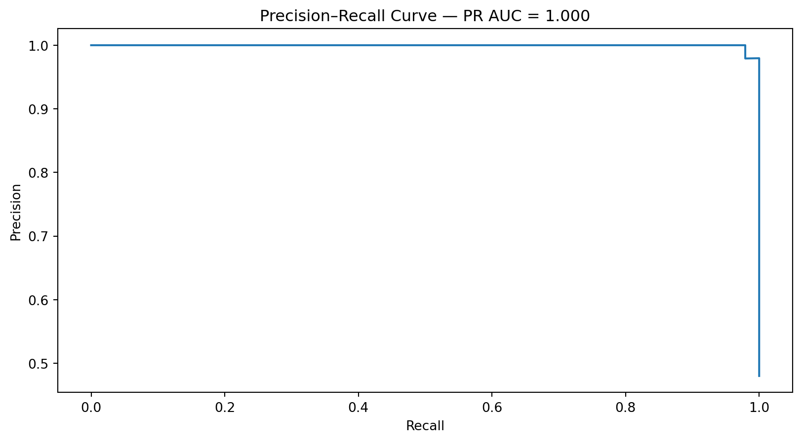
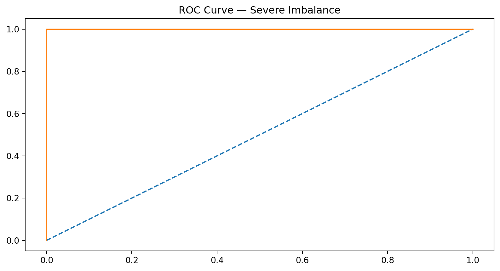
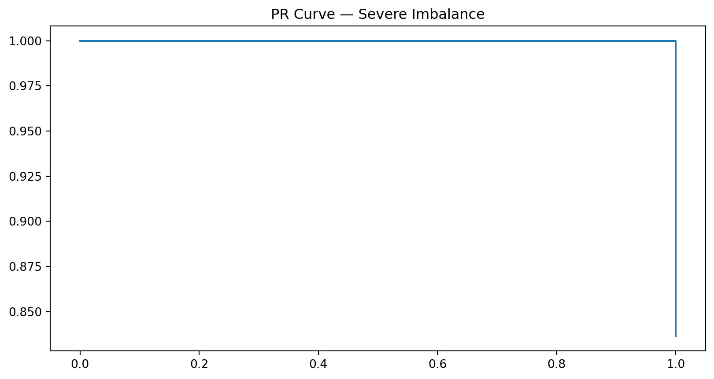

AD698 - Applied Generative AI
From Words to Structured Text
Nakul R. Padalkar
Boston University
March 12, 2024
How to print Revealjs slides

Defining the Word
Types, Tokens, and Vocabulary
A token is an individual occurrence of a word in a document:
w = (w_1, w_2, \ldots, w_M), where each w_m \in V.
A type is a unique word in the vocabulary.
A document’s type‑count vector is
\begin{align} x_j \in \{0,1,2,\ldots,M\} \end{align}- where x_j counts how many times type j appears.
Order matters for tokens; order is lost in type counts.
Many token sequences map to the same type‑count vector.
Multinomial Naïve Bayes uses type counts, but an equivalent generative model can produce tokens directly.
Naïve Bayes for Word Classification
- Goal: classify a document x into a label y \in \{1,\ldots,K\}.
- Bayes rule:
\begin{align} \hat{y} = \arg\max_y \; p(y \mid x) = \arg\max_y \; p(x \mid y)\,p(y) \end{align} - Naïve assumption: features (words) are conditionally independent given the class.
- Prior:
\begin{align} p(y=k) = \mu_k \end{align} - Likelihood factorizes across features.
Multinomial Naïve Bayes
- Represent document as type‑count vector
\begin{align} x = (x_1, x_2, \ldots, x_V) \end{align} - Generative process:
- Draw class y \sim \text{Categorical}(\mu).
- Draw counts from a multinomial: x \mid y \sim \text{Multinomial}(M, \phi_y)
- Draw class y \sim \text{Categorical}(\mu).
- Likelihood:
\begin{align} p(x \mid y) = B(x)\prod_{j=1}^V \phi_{y,j}^{x_j} \end{align}- where B(x) = \frac{M!}{x_1!x_2!\cdots x_V!} is the multinomial coefficient.
Token‑Level Generative Model
- Alternative generative process (Algorithm 2):
\begin{align} y^{(i)} &\sim \text{Categorical}(\mu)\\ w_m^{(i)} &\mid y^{(i)} \sim \text{Categorical}(\phi_{y^{(i)}}) \end{align} - Conditional independence:
\begin{align} w_m^{(i)} \perp w_{m'}^{(i)} \mid y^{(i)} \end{align} - Probability of sequence:
\begin{align} p(w \mid y) = \prod_{m=1}^M \phi_{y,\,w_m} \end{align} - Equivalent to multinomial NB up to the multinomial coefficient B(x).
Why the Two Models Are Equivalent
- Many token sequences correspond to the same type‑count vector.
- Relationship:
\begin{align} p(w \mid y) = \frac{1}{B(x)}\,p(x \mid y) \end{align} - Since B(x) \ge 1,
\begin{align} p(x \mid y) \ge p(w \mid y) \end{align} - Classification decisions identical because B(x) does not depend on y.
- Order adds no information under the Naïve Bayes independence assumption.
Tokenization
- Converts raw character sequences into discrete units.
- English: whitespace + punctuation rules often suffice.
- Other languages: segmentation is non‑trivial (e.g., Chinese, Japanese).
- Challenges:
- Ambiguity: “Isn’t Ahab, Ahab? ;)” → different tokenizers produce different segmentations.
- Languages without spaces require statistical segmentation.
- Social media, hashtags, emojis, and code‑switching complicate boundaries.
- Ambiguity: “Isn’t Ahab, Ahab? ;)” → different tokenizers produce different segmentations.
- Algorithmic Approaches
- Rule‑based (regex, dictionaries).
- Supervised sequence labeling (e.g., logistic regression, CRF).
- Neural models (LSTM‑CRF, CNN‑based encoders).
- Rule‑based (regex, dictionaries).
Out‑of‑Vocabulary (OOV) Words
- Closed vs. open vocabulary
- Closed vocabulary: fixed V.
- Real text introduces new names, slang, technologies, numbers, and morphological variants.
- Closed vocabulary: fixed V.
- Basic OOV handling
- Replace unseen types with a special token: ⟨UNK⟩.
- Option: mark first occurrence of each type as ⟨UNK⟩.
- Replace unseen types with a special token: ⟨UNK⟩.
- Better OOV modeling
- Character‑level models (n‑grams, RNNs, CNNs).
- Subword segmentation (morphemes, BPE, unigram LM).
- Helps with morphologically rich languages (e.g., Portuguese verb paradigms).
- Character‑level models (n‑grams, RNNs, CNNs).
Vocabulary Size and Coverage
Larger vocabulary → higher coverage but larger models.
English movie reviews: ~4k types cover ~90% of tokens.
Portuguese (MAC‑Morpho): >10k types needed for similar coverage.
Design decisions
- Limit vocabulary to top‑K types.
- Consider stemming/lemmatization.
- Avoid over‑aggressive stopword removal in supervised tasks.
- Feature hashing for fixed‑size representations.
- Limit vocabulary to top‑K types.
Vector Semantics
Distributional Semantics: The Core Idea
- Meaning emerges from contextual usage.
- Harris (1954), Firth (1957): “You shall know a word by the company it keeps.”
- Represent words as vectors in a high‑dimensional space.
- Similarity = geometric closeness.
- Foundation for all modern embeddings.
Static Embeddings: word2vec & GloVe
word2vec
- Learns embeddings by predicting context.
- Learns embeddings by predicting context.
Two architectures:
- CBOW: predict target from context.
- Skip‑gram: predict context from target.
- CBOW: predict target from context.
Objective (skip‑gram):
\begin{align} \max_\theta \sum_{t=1}^T \sum_{c \in \mathcal{C}(t)} \log p(w_c \mid w_t) \end{align}GloVe
- Global co‑occurrence matrix factorization.
\begin{align} J = \sum_{i,j} f(X_{ij})\left( w_i^\top \tilde{w}_j + b_i + \tilde{b}_j - \log X_{ij} \right)^2 \end{align}
- Global co‑occurrence matrix factorization.
Geometry of Embedding Spaces
- Embedding space = semantic geometry.
- Cosine similarity:
- Cosine: angle → semantic similarity.
\begin{align} \text{cos}(u,v) = \frac{u \cdot v}{\|u\|\|v\|} \end{align}
- Cosine: angle → semantic similarity.
- Euclidean distance:
- Euclidean: magnitude + direction → sensitive to frequency effects.
\begin{align} d(u,v) = \|u - v\| \end{align}
- Euclidean: magnitude + direction → sensitive to frequency effects.
Distance Metrics in Embedding Space

Mahalanobis Distance: Covariance‑Aware Similarity
- Accounts for correlated dimensions.
- Generalized distance:
\begin{align} d_M(u,v) = \sqrt{(u-v)^\top \Sigma^{-1}(u-v)} \end{align} - \Sigma = covariance matrix of embedding distribution.
- Benefits:
- Downweights noisy or redundant dimensions.
- Captures anisotropy in embedding spaces.
- Downweights noisy or redundant dimensions.
- Useful in metric learning, clustering, and specialized retrieval tasks.
Mahalanobis Distance

Cross‑Entropy
Cross‑Entropy
- Cross‑entropy measures how well a predicted distribution matches the true one.
- High cross‑entropy → model assigns low probability to the correct class.
- Low cross‑entropy → model is confident and correct.
- Visual intuition:
- When the predicted probability for the true class approaches 1, loss → 0.
- When the model is wrong/confident, loss spikes sharply.
- When the predicted probability for the true class approaches 1, loss → 0.
- This loss underlies softmax classifiers, word prediction, and neural language models.
Representing Meaning
VAKOG: Visual, Auditory, Kinesthetic modalities.

Why Represent Meaning in Vectors?
- Words carry meaning through patterns of use.
- Distributional hypothesis → represent meaning via co‑occurrence structure.
- Vector spaces allow:
- Similarity comparisons
- Analogy reasoning
- Clustering & retrieval
- Input to neural models
- Similarity comparisons
- Meaning becomes geometry.
Static Embeddings
- One vector per word type (context‑independent).
- Learned from large corpora.
- Two major families:
- word2vec (predictive)
- GloVe (count‑based factorization)
- word2vec (predictive)
- Capture syntactic & semantic regularities.
- Limitations:
- Polysemy collapsed into one vector
- No contextual variation
- Polysemy collapsed into one vector
Contextual Embeddings
- Meaning depends on context.
- Same word → different vectors in different sentences.
- Produced by deep LMs (ELMo, BERT, GPT).
- Representations come from hidden states of the model.
- Capture:
- Word sense
- Syntax
- Long‑range dependencies
- Discourse‑level meaning
- Word sense
Classification Diagnostics & Evaluation
Classification Example
- Dataset includes Adelie, Gentoo, Chinstrap penguins.
- Features: bill length, bill depth, flipper length, body mass.
- For evaluation demos, create a binary task:
- Adelie vs Non‑Adelie
- Adelie vs Non‑Adelie
- Allows clean visualization of:
- Class separation
- Threshold effects
- ROC & PR curves
- Imbalance manipulation
- Class separation
- More Detailed discussion is in module 8 lecture note 1.
Visualizing the Feature Space

Confusion Matrix & Thresholding

ROC Curve on Penguins
- ROC = TPR vs FPR across thresholds.
- AUC = ranking quality.
- Penguins show clear separation → high AUC.
- Connects to LLM evaluation:
- LLM token ranking ≈ classifier score ranking.

ROC AUC: 0.9995993589743589Precision–Recall Curve on Penguins
- PR curve focuses on the positive class.
- More sensitive to imbalance.
- Demonstrates why PR‑AUC is preferred when positives are rare.
- Connects to LLM correctness:
- Rare correct answers → PR‑AUC is more informative.

Creating Imbalance in Penguins
- Downsample Adelie to simulate 1:10 imbalance.
- ROC remains high; PR collapses.
- Mirrors the attached document’s insight:
> “ROC AUC can be optimistic on severely imbalanced classification problems.”


LLM Correctness Evaluation
- LLMs output ranked token distributions, not labels.
- Evaluation parallels ROC/PR:
- Ranking quality → ROC‑AUC
- Rare correct answers → PR‑AUC
- Calibration → Brier score
- Ranking quality → ROC‑AUC
- Penguins example builds intuition for LLM scoring.
Feedforward Architectures
Feedforward Neural Networks
- Check module 8 Lecture note 1 and 2 for details on feedforward architectures and Backpropagation.
- Download data for analysis from here
Recurrent Architectures
Recurrent Neural Networks
- Check module 8 Lecture note 3 for details on recurrent architectures and LSTM.
- Download data for analysis from here
Attention & Long‑Range Dependencies
Why RNNs Struggle With Long‑Range Dependencies
RNNs compress all past information into a single hidden state.
Gradients must flow through many time steps, causing vanishing/exploding gradients.
Sequential processing prevents parallelization.
Even LSTMs/GRUs struggle when dependencies span dozens or hundreds of tokens.
Bottleneck:
\begin{align} h_t = f(h_{t-1}, x_t) \end{align}All information must pass through h_t.
The Need for Direct Access to Context
- Many tasks require linking distant tokens:
- Coreference (“The book… it…”)
- Long sentences
- Document‑level reasoning
- Coreference (“The book… it…”)
- RNNs force the model to “remember” everything.
- We want a mechanism where a token can look up relevant information directly.
- Key idea: don’t compress the past — attend to it.
The Attention Mechanism
- Each token produces:
- Query Q
- Key K
- Value V
- Query Q
- Attention score:
\begin{align} \text{score}(Q,K) = \frac{QK^\top}{\sqrt{d_k}} \end{align}
- Softmax turns scores into weights.
- Output is a weighted sum of values:
\begin{align} \text{Attention}(Q,K,V) = \text{softmax}\left(\frac{QK^\top}{\sqrt{d_k}}\right)V \end{align}
- Tokens retrieve information from anywhere in the sequence.
Why Attention Solves Long‑Range Dependencies
- No recurrence → no vanishing gradients.
- Every token can attend to any other token.
- Parallelizable across sequence length.
- Learns dynamic context:
- Syntax
- Semantics
- Coreference
- Long‑range structure
- Syntax
Multi‑Head Self‑Attention
- Instead of one attention pattern, use multiple heads.
- Each head learns a different projection of Q, K, V.
- Heads capture different relationships:
- Syntax
- Semantic similarity
- Positional patterns
- Syntax
- Outputs are concatenated and projected:
\begin{align} \text{MHA}(X) = \text{Concat}(\text{head}_1,\dots,\text{head}_h)W^O \end{align}
Visualizing Multi‑Head Attention
- Each head = a different “view” of the sequence.
- Some heads track subject–verb agreement.
- Some track coreference.
- Some track positional offsets.
- Combined → rich contextual representation.
Leading to Transformers
- Attention removes RNN bottlenecks.
- Enables full parallelization.
- Scales to long sequences.
- Forms the core of:
- BERT
- GPT
- T5
- LLaMA
- All modern LLMs
- BERT
- This is the key architectural leap from RNNs → Transformers.
Transformer Architectures
Encoder
Decoder
Encoder–decoder
Cross-attention
Pretraining Objectives
Masked language modeling
Causal language modeling
Modern Extensions
Vision transformers
Architectural innovations (MoE, RoPE, Flash Attention)
Multimodal LLMs